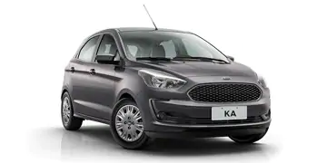
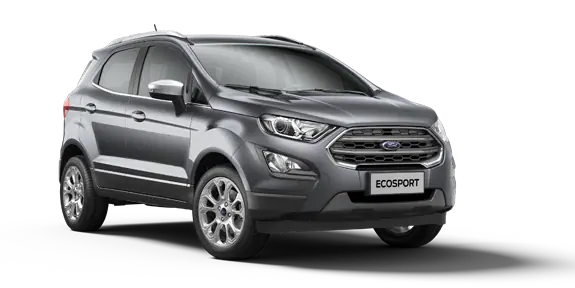
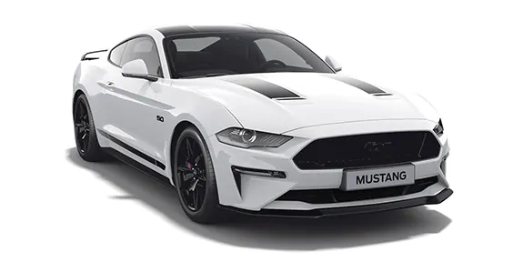

A Ford está hoje na linha de frente das tecnologias que abrem caminho para a mobilidade do futuro, com carros elétricos, autônomos, inteligentes e conectados. Para chegar até aqui foram décadas de investimento, pesquisa e inovação, que nasceram com o sonho de Henry Ford de tornar o automóvel acessível para as massas.
Ford Motor Company (geralmente referida simplesmente como Ford) é uma fabricante de automóveis multinacional estadunidense sediada em Dearborn, Michigan, um subúrbio de Detroit. Foi fundada por Henry Ford e incorporada em 16 de junho de 1903. A companhia vende carros e veículos comerciais sob a marca de Ford e a maioria de seus carros de luxo sob a marca Lincoln. Ford também possui o fabricante brasileiro de jipes e fora de estrada Troller, o fabricante de carros australiano FPV e a fabricante brasileira de caminhões Ford Caminhões. No passado, também produziu tratores e componentes automotivos. A Ford detém uma participação de 2,1% na Mazda do Japão, uma participação de 8% na Aston Martin do Reino Unido e uma participação de 49% na Jiangling da China. Também tem uma série de joint-ventures, sendo uma na China (Changan Ford), Taiwan (Ford Lio Ho), Tailândia (AutoAlliance Tailândia), Turquia (Ford Otosan) e Rússia (Ford Sollers). É listada na Bolsa de Valores de Nova York e é controlado pela família Ford, embora eles tenham propriedade minoritária (mas a maioria do poder de voto).
A Ford introduziu métodos para a fabricação em grande escala de carros e gestão em larga escala através de uma força de trabalho industrial que usa linhas de montagem em movimento; em 1914 esses métodos eram conhecidos em todo o mundo como fordismo. As antigas subsidiárias britânicas da Ford, a Jaguar e a Land Rover, adquiridas em 1989 e 2000, respectivamente, foram vendidas à Tata Motors em março de 2008. A Ford foi proprietária da montadora sueca Volvo de 1999 a 2010.[2] Em 2011, a Ford descontinuou a marca Mercury, sob a qual tinha comercializado carros de luxo nos Estados Unidos, Canadá, México e Oriente Médio desde 193
Durante a crise financeira no início do século XXI, a empresa chegou perto de falência, mas desde então voltou a ter rentabilidade. A Ford é a segunda maior fabricante de automóveis norte-americana (precedida pela General Motors) e a quinta maior do mundo com base nas vendas de veículos em 2010.[3] No final de 2010, a Ford era a quinta maior fabricante de automóveis na Europa[4] e no Brasil em 2019.[5] A Ford é a oitava empresa estadunidense na lista Fortune 500, com base nas receitas globais em 2009 de 118,3 bilhões de dólares.[6] Em 2008, a Ford produziu 5.532 milhões de automóveis[7] e empregou cerca de 213.000 funcionários em cerca de 90 fábricas e instalações em todo o mundo.
A Ford é sinônimo de automóvel e inovação há mais de 100 anos. Foi a primeira indústria automobilística a se instalar no Brasil, em 1919.
| Modelo | Valor | Destaque | |
|---|---|---|---|
| Ka  |
|
Motores: |
Consumo: |
| EcoSport  |
|
Motores: |
Consumo: |
| Mustang Black Shadow  |
|
MOTOR: Coyote 5.0L V8 |
Torque (Nm) 556 |